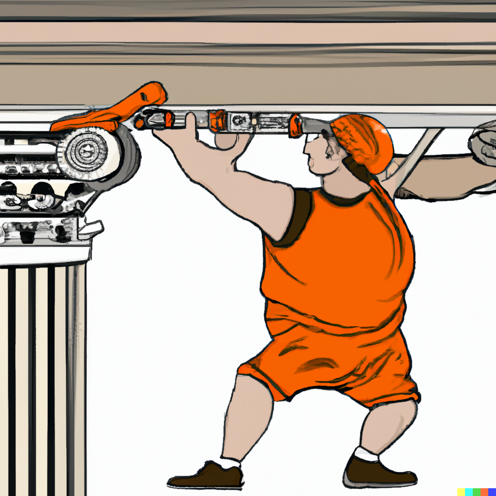

Building Reproducible Analytical Pipelines
Master of Data Science, University of Luxembourg - 2023
Introduction

This is the 2023 edition of the course. If you’re looking for the 2022 edition, you can click here
What’s new:
- The book is now built using Quarto
- Updated links to newer materials
- Longer chatper on Github Actions
- New chapter on reproducibility with Nix
This course is based on my book titled Building Reproducible Analytical Pipelines with R. This course focuses only on certain aspects that are discussed in greater detail in the book.
Schedule
- 2023/11/27, Introduction to reproducibility and functional programming
- 2023/11/28, Version control with Git, Package development and unit testing
- 2023/12/05, Build automation
- 2023/12/11, Literate programming and Shiny
- 2023/12/12, Self-contained pipelines with Docker
- 2023/12/18, CI/CD with Github Actions
- 2023/12/19, Reproducibility with Nix
Reproducible analytical pipelines?
This course is my take on setting up code that results in some data product. This code has to be reproducible, documented and production ready. Not my original idea, but introduced by the UK’s Analysis Function.
The basic idea of a reproducible analytical pipeline (RAP) is to have code that always produces the same result when run, whatever this result might be. This is obviously crucial in research and science, but this is also the case in businesses that deal with data science/data-driven decision making etc.
A well documented RAP avoids a lot of headache and is usually re-usable for other projects as well.
Data products?
In this course each of you will develop a data product. A data product is anything that requires data as an input. This can be a very simple report in PDF or Word format or a complex web app. This website is actually also a data product, which I made using the R programming language. In this course we will not focus too much on how to create automated reports or web apps (but I’ll give an introduction to these, don’t worry) but our focus will be on how to set up a pipeline that results in these data products in a reproducible way.
Machine learning?
No, being a master in machine learning is not enough to become a data scientist. Actually, the older I get, the more I think that machine learning is almost optional. What is not optional is knowing how:
- to write, test, and properly document code;
- to acquire (reading in data can be tricky!) and clean data;
- to work inside the Linux terminal/command line interface;
- to use Git, Docker for Dev(Git)Ops;
- the Internet works (what’s a firewall? what’s a reverse proxy? what’s a domain name? etc, etc…);
But what about machine learning? Well, depending what you’ll end up doing, you might indeed focus a lot on machine learning and/or statistical modeling. That being said, in practice, it is very often much more efficient to let some automl algorithm figure out the best hyperparameters of a XGBoost model and simply use that, at least as a starting point (but good luck improving upon automl…). What matters, is that the data you’re feeding to your model is clean, that your analysis is sensible, and most importantly, that it could be understood by someone taking over (imagine you get sick) and rerun with minimal effort in the future. The model here should simply be a piece that could be replaced by another model without much impact. The model is rarely central… but of course there are exceptions to this, especially in research, but every other point I’ve made still stands. It’s just that not only do you have to care about your model a lot, you also have to care about everything else.
So in this course we’re going to learn a bit of all of this. We’re going to learn how to write reusable code, learn some basics of the Linux command line, Git and Docker.
What actually is reproducibility?
A reproducible project means that this project can be rerun by anyone at 0 (or very minimal) cost. But there are different levels of reproducibility, and I will discuss this in the next section. Let’s first discuss some requirements that a project must have to be considered a RAP.
The requirements of a RAP
For something to be truly reproducible, it has to respect the following bullet points:
- Source code must obviously be available and thoroughly tested and documented (which is why we will be using Git and Github);
- All the dependencies must be easy to find and install (we are going to deal with this using dependency management tools);
- To be written with an open source programming language (nocode tools like Excel are by default non-reproducible because they can’t be used non-interactively, and which is why we are going to use the R programming language);
- The project needs to be run on an open source operating system (thankfully, we can deal with this without having to install and learn to use a new operating system, thanks to Docker);
- Data and the paper/report need obviously to be accessible as well, if not publicly as is the case for research, then within your company.
Also, reproducibility is on a continuum, and depending on the constraints you face your project can be “not very reproducible” to “totally reproducible”. Let’s consider the following list of anything that can influence how reproducible your project truly is:
- Version of the programming language used;
- Versions of the packages/libraries of said programming language used;
- Operating System, and its version;
- Versions of the underlying system libraries (which often go hand in hand with OS version, but not necessarily).
- And even the hardware architecture that you run all that software stack on.
So by “reproducibility is on a continuum”, what I mean is that you could set up your project in a way that none, one, two, three, four or all of the preceding items are taken into consideration when making your project reproducible.
This is not a novel, or new idea. Peng (2011) already discussed this concept but named it the reproducibility spectrum.

Why R? Why not [insert your favourite programming language]
In my absolutely objective opinion R is currently the most interesting and simple language you can use to create such data products. If you learn R you have access to almost 20’000 packages (as of October 2023) to:
- clean data (see:
{dplyr},{tidyr},{data.table}…); - work with medium and big data (see:
{arrow},{sparklyr}…); - visualize data (see:
{ggplot2},{plotly},{echarts4r}…); - do literate programming (using Rmarkdown or Quarto, you can write books, documents even create a website);
- do functional programming (see:
{purrr}…); - call other languages from R (see:
{reticulate}to call Python from R); - do machine learning and AI (see:
{tidymodels},{tensorflow},{keras}…) - create webapps (see:
{shiny}…) - domain specific statistics/machine learning (see CRAN Task Views for an exhaustive list);
- and more
It’s not just about what the packages provide: installing R and its packages and dependencies is rarely frustrating, which is not the case with Python (Python 2 vs Python 3, pip vs conda, pyenv vs venv…, dependency hell is a real place full of snakes)
That doesn’t mean that R does not have any issues. Quite the contrary, R sometimes behaves in seemingly truly bizarre ways (as an example, try running nchar("1000000000") and then nchar(1000000000) and try to make sense of it). To know more about such bizarre behaviour, I recommend you read The R Inferno (linked at the end of this chapter). So, yes, R is far from perfect, but it sucks less than the alternatives (again, in my absolutely objective opinion).
Pre-requisites
I will assume basic programming knowledge, and not much more. If you need to set up R on your computer you can read the intro to my other book Modern R with the tidyverse. Follow the pre-requisites there: install R, RStudio and these packages:
install.packages(c("Ecdat", "devtools", "janitor", "plm", "pwt9",
"quarto", "renv", "rio", "shiny", "targets", "tarchetypes",
"testthat", "tidyverse", "usethis"))The course will be very, very hands-on. I’ll give general hints and steps, and ask you to do stuff. It will not always be 100% simple and obvious, and you will need to also think a bit by yourself. I’ll help of course, so don’t worry. The idea is to put you in the shoes of a real data scientist that gets asked at 9 in the morning to come up with a solution to a problem by COB. In 99% of the cases, you will never have encountered that problem ever, as it will be very specific to the company you’re working at. Google and Stackoverflow will be your only friends in these moments.
The beginning of this course will likely be the toughest part, especially if you’re not familiar with R. I will need to bring you up to speed in 6 hours. Only after can we actually start talking about RAPs. What’s important is to never give up and work together with me.
Grading
The way grading works in this course is as follows: during lecture hours you will follow along. At home, you’ll be working on setting up your own pipeline. For this, choose a dataset that ideally would need some cleaning and/or tweaking to be usable. We are going first to learn how to package this dataset alongside some functions to make it clean. If time allows, I’ll leave some time during lecture hours for you to work on it and ask me and your colleagues for help. At the end of the semester, I will need to download your code and get it running. The less effort this takes me, the better your score. Here is a tentative breakdown:
- Code is on github.com and the repository is documented with a Readme.md file: 5 points;
- Data and functions to run pipeline are documented and tested: 5 points;
- Every software dependency is easily installed: 5 points;
- Pipeline can be executed in one command: 5 points;
- Bonus points: pipeline is dockerized, or uses Nix, and/or uses Github Actions to run? 5 points
The way to fail this class is to write an undocumented script that only runs on your machine and expect me to debug it to get it to run.
Jargon
There’s some jargon that is helpful to know when working with R. Here’s a non-exhaustive list to get you started:
- CRAN: the Comprehensive R Archive Network. This is a curated online repository of packages and R installers. When you type
install.packages("package_name")in an R console, the package gets downloaded from there; - Library: the collection of R packages installed on your machine;
- R console: the program where the R interpreter runs;
- Posit/RStudio: Posit (named RStudio in the past) are the makers of the RStudio IDE and of the tidyverse collection of packages;
- tidyverse: a collection of packages created by Posit that offer a common language and syntax to perform any task required for data science — from reading in data, to cleaning data, up to machine learning and visualisation;
- base R: refers to a vanilla installation (and vanilla capabilities) of R. Often used to contrast a tidyverse specific approach to a problem (for example, using base R’s
lapply()in constrast to the tidyversepurrr::map()). package::function(): Functions can be accessed in several ways in R, either by loading an entire package at the start of a script withlibrary(dplyr)or by usingdplyr::select().- Function factory (sometimes adverb): a function that returns a function.
- Variable: the variable of a function (as in
xinf(x)) or the variable from statistical modeling (synonym of feature) <-vs=: in practice, you can use<-and=interchangeably. I prefer<-, but feel free to use=if you wish.
Further reading
License
This course is licensed under the WTFPL.
Peng, Roger D. 2011. “Reproducible Research in Computational Science.” Science 334 (6060): 1226–27.